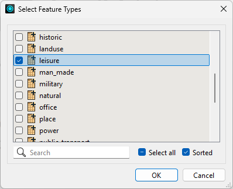
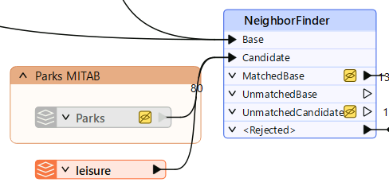
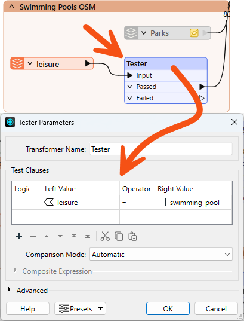
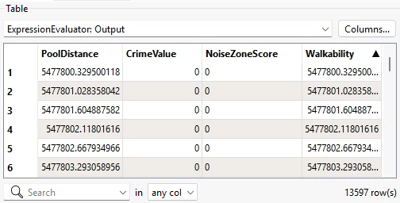
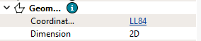
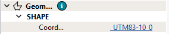
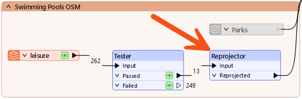

Learning Objectives
After completing this lesson, you’ll be able to:
- Identify a coordinate system mismatch.
- Fix a coordinate system mismatch using a Reprojector transformer.
Instructions
In this lesson, you will:
- Optional: Watch the Debugging a Workspace video.
- Optional: Watch the Conclusion video.
- Scroll down to read the text below.
- Optional: Let us know if you found this lesson relevant to your role by filling out the survey at the bottom of the page.
- Click 'Next' to mark the lesson complete.
Note: This video was recorded using an earlier version of this exercise and appears in both this lesson and the previous one. The steps may not match exactly, but the concepts are the same.
Resources
Exercise

The missing CrimeValue problem is fixed, and Frank can now calculate walkability scores for all address records. But the city has changed its approach. Parks are no longer a useful measure because most addresses already have a park nearby.
Instead, the city wants the walkability score to include the walking distance to the nearest swimming pool. Frank can reuse most of Jennifer’s existing workflow, but he needs to replace the parks data, update the related attributes, and check whether the new results still make sense.
In this exercise, you will:
- Replace the parks data with swimming pool data.
- Update the workspace so Walkability uses PoolDistance.
- Identify and fix a coordinate system mismatch.
1) Add Swimming Pools
Start by adding the new dataset. The swimming pool features are stored in an OpenStreetMap dataset that includes multiple leisure facility types.
- Use your same starting workspace (C:\FMEData\Workspaces\UseDataIntegrationBestPractices\debugging-a-workspace.fmw) from the last exercise.
- Add a Reader and set the following parameters:
- When prompted, on Select Feature Types, only select leisure.

2) Connect Leisure Data
Connect the new leisure data to the workspace section that calculates distance. The parks data currently feeds the Candidate input on the NeighborFinder, so you will replace that input with swimming pool data.
- Move the Leisure reader near the Parks reader.
- Connect Leisure to the NeighborFinder Candidate input port.
- Right-click Parks.
- Select Disable.
- Disabling the Parks reader keeps it in the workspace, but prevents it from being used in the translation.
- At this point, all leisure features are connected to the distance calculation. You still need to filter the data so only swimming pools are used.

3) Filter Leisure Data
The leisure dataset contains more than swimming pools. Before calculating distance, filter the data so only swimming pool features continue through the workflow.
- Add a Tester between the Leisure feature type and the NeighborFinder, with the following settings:
- Left Value:
leisure
- Operator:
=
- Right Value:
swimming_pool

- Connect the Tester's Passed port to the NeighborFinder's Candidate input port.
- The Passed output contains features where the leisure value is swimming_pool.
- These are the features you want to use in the distance calculation
Now that the data source has changed from parks to pools, several transformers still reference ParkDistance. Update them to use PoolDistance instead so the walkability calculation uses the correct attribute.
- In the AttributeRenamer, update the Output Attribute value from ParkDistance to PoolDistance.
- The ExpressionEvaluator will turn red because it still references ParkDistance.
- In the AttributeKeeper, replace ParkDistance with PoolDistance.
- In the ExpressionEvaluator, update the expression to:
@Value(PoolDistance) + @Value(CrimeValue) - @Value(NoiseZoneScore)
- Run your workspace.
5) Assess Walkability Output
Run the workspace and check whether the new output looks reasonable. Even when a workspace runs without errors, the output can still be incorrect.
- On the ExpressionEvaluator, click the Output port cache.
- Inspect the Walkability attribute.
- Inspect the PoolDistance attribute.
- Notice that the walkability scores are now much larger than expected.
- The rounded maximum value is about 5,477,800. Much more than the previous maximum value of 956.

6) Locate the Problem
The large PoolDistance values point to a problem with the pool data. There are no helpful log messages, and the record counts look correct, so you decide to inspect the data directly to find the cause. A common cause of unexpectedly large distance values is a mismatch in coordinate systems between the two datasets being compared.
- On the Leisure reader, click the Passed port cache.
- In the Record Information, inspect your system coordinates.
- The leisure data from OSM is in LL84.

- On the CenterPointReplacer, click the Point port cache.
- In the Record Information, inspect your system coordinates.
- The address data is in UTM83-10.

- Notice that this mismatch is why pool distances are so large. FME is calculating the distance between two datasets in completely different coordinate spaces.
7) Fix Coordinate System Problem
Now that you have confirmed the mismatch, reproject the leisure data to match the address data before it reaches the NeighborFinder.
- Add a Reprojector between the Tester's Passed port and the NeighborFinder's Candidate input port.
- Set the following parameters:
- Source Coordinate System:
LL84
- Destination Coordinate System:
UTM83-10

8) Confirm Walkability Scores
Run the updated part of the workspace and confirm the distance values are now reasonable.
- On Reprojector, click Run From This.
- On ExpressionEvaluator, inspect the Output port data cache.
- Inspect the PoolDistance attribute and the Walkability attribute.
- The walkability scores should now be much smaller.
- The rounded maximum value of walkability should be 4,308.
Leave Us Feedback on This Lesson